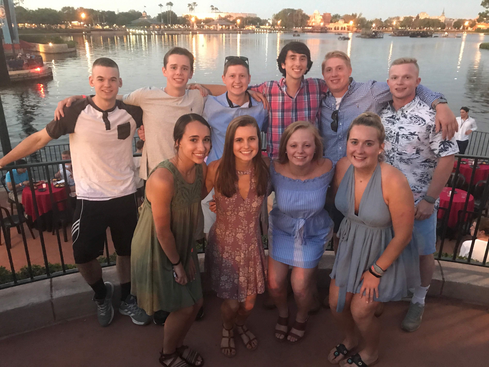
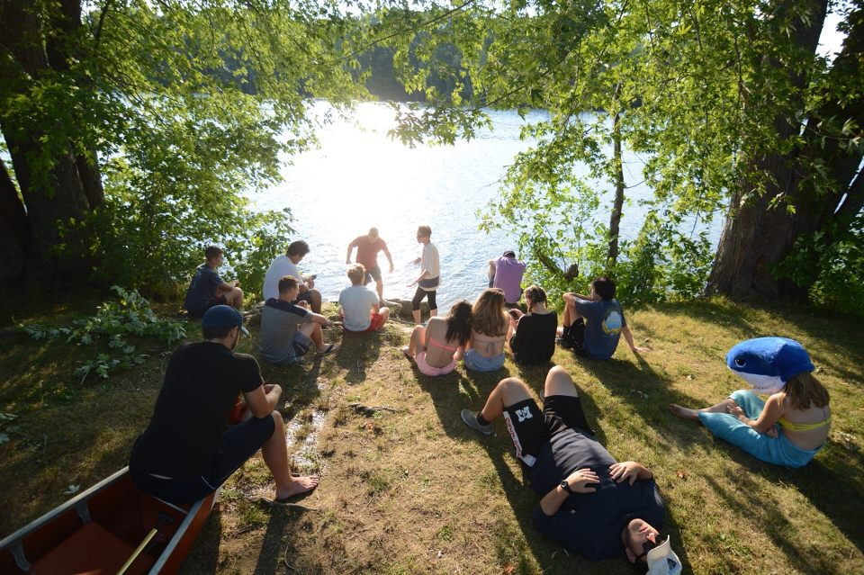

Throughout middle school I bounced from friend group to friend group, and only had a few true close friends who were always with me. I liked meeting new people, but it was always nice to have this one group of friends that I would always be friends with. I had known most of them since elementary school, and one when I was a toddler. Once high school started, I started meeting even more new people, and friend groups changed again. I went through a few different groups, but fell back to the same people. Junior year was when I found the friends that I now consider my best friends. I am still close with my other friends that I have known since elementary school, but these people were something new, and we all fit together perfectly. All of us have been super close since then, and it made going to college hard, but now I have found a new group of people who I am just as close with.
This is all of us in Disney World on our class field trip. Back row left to right: Joe, Brennon, Erik, Me, Max, Sean
Front row left to right: Nicole, Kaitlyn, Kelly, Mckenna

This is all of us right before graduation.
These are my best friends that I have made up in Maine, down by the river.